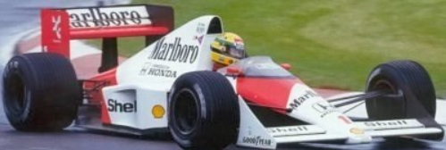
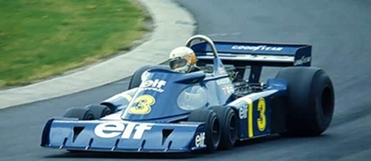
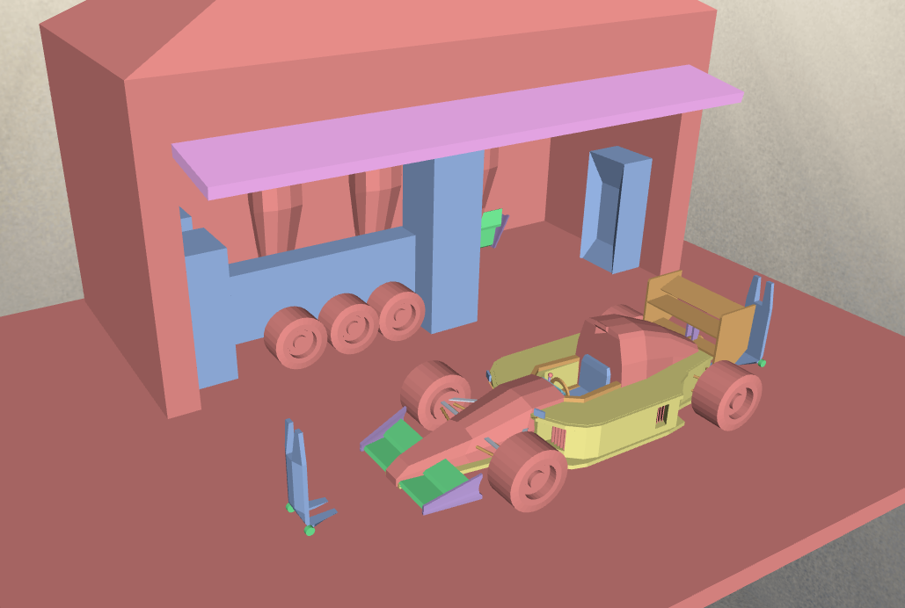
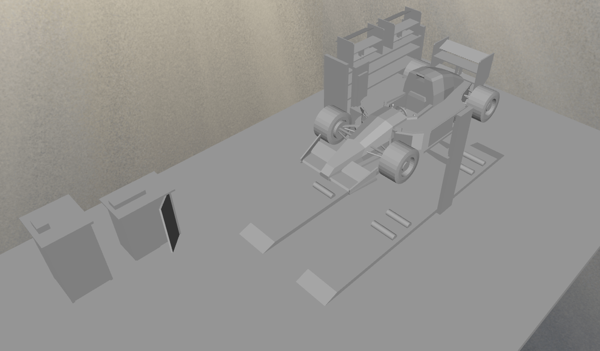

Scene recreations of classic traditional racing cars
Formula One Cars
Click Start Experience to enter the first racing scene. Background music will play automatically after you
begin, and you can pause it or adjust the volume from the music controls beside About.
Loading model
Drag to orbit, scroll to zoom.
About the 3D App
This Formula One themed Web 3D application was built as an original interface around three local glTF
scenes. It combines HTML5, CSS3, Bootstrap and Three.js to present model loading, scene switching,
animation playback, lighting control, camera tools and synchronised audio cues in one responsive app.
HTML5CSS3BootstrapThree.jsglTFJavaScript
GitHub Repository
The original project files, web page source code and local 3D assets are available in the GitHub
repository below.
I chose a Formula-style racing car because its shape is immediately recognisable in 3D: the long
low body, exposed wheels, front nose, cockpit and rear wing all read clearly from different camera
angles. It also gave the project a strong reason to include more than a static model. A racing car
naturally supports a test rig scene, pit-stop scene and showcase scene, so the final app could
demonstrate animation, lighting changes, camera controls and sound effects through a coherent
motorsport theme.
Why I Used Blockbench
Blockbench was selected because its block-based modelling tools make it practical to build clean
hard-surface objects with controlled proportions. For this project, that was useful for shaping the
chassis, tyres, wings, pit equipment and display components without overcomplicating the modelling
process. It also supports texture work, simple animation and glTF export, which made the transition
from modelling to Three.js web integration more direct.
Low-Poly Pixel Style
I deliberately used a low-poly, pixel-inspired visual style instead of trying to make the car fully
photorealistic. This style matches the block-based modelling workflow in Blockbench and makes the
shapes easier to read in a browser-based 3D viewer. The simplified geometry keeps the models lighter
for real-time loading, while the clear edges, bold colours and stylised details give the project a
consistent game-like identity. It also helps show the model construction more clearly, because the
viewer can understand the wheels, cockpit, wings and pit equipment without relying on complex
realistic materials.
Prototype References and Visual Development
To evidence the work put into the web page, I added visual reference images and explanatory text rather
than only presenting the finished 3D viewer. These two Formula racing prototypes were used as visual
research for the app theme. They helped define the low racing silhouette, exposed wheels, rear wing,
cockpit position, sponsor-style colour blocking and track-focused presentation used across the interface
and the three 3D scenes.

Red and white Formula reference
This reference was used to study the classic long nose, wide tyres, driver cockpit, rear wing and
red/white racing contrast. Those visual cues influenced the F1 logo treatment, the red active state
used in the navigation and buttons, and the polished display style of the showcase scene.

Blue six-wheel racing reference
This reference shows a more experimental racing shape with six wheels, a compact cockpit, large rear
tyres and a deep blue livery. It supported the decision to make the project more than a static car
viewer by including testing, pit-work and inspection contexts.
Scene Modelling Process
After the racing car prototype research, I also modelled two supporting motorsport spaces so the website
would feel like a complete race environment rather than a single object viewer. The pit room and testing
room represent two important stages around a race car: maintenance under pressure and controlled
performance checking.

Pit room scene modelling
The pit room was created to recreate the service area of a racing circuit. I focused on the car
position, tyre-change equipment and compact garage layout so the scene could support the tyre
replacement animation and show the technical teamwork that happens beside the track.

Fix room and test rig modelling
The fix room was built as a controlled testing space for the Formula car. The model combines the
vehicle, support frame and testing objects to suggest a workshop where engineers inspect movement,
wheel behaviour and vehicle balance before the car returns to the track.
How the references affected the final web page
The Formula dashboard style was chosen to match the racing subject rather than a generic gallery.
The red highlight colour was taken from the red and white prototype and applied to active controls.
The darker blue/grey UI background was chosen to echo the track and engineering mood of the references.
The model viewer prioritises a low front-facing camera angle so the car shape reads clearly.
The three scenes show different parts of a racing workflow: test rig, pit stop and showcase inspection.
The About page includes the references, model facts and testing notes to make the development work visible.
Model Evidence
Formula Test Rig Scene
Loaded from assets/models/car_treadmill.gltf. This scene presents a Formula car on a
test rig and uses the embedded animationrun clip for the vehicle test sequence.
149 meshes
3 embedded PNG texture maps
Animation: Vehicle test run
Formula Pit Stop Scene
Loaded from assets/models/pitroom_tyre_change.gltf. It focuses on a service area and
tyre-change animation, supporting the racing pit-wall story of the app.
133 meshes
2 embedded PNG texture maps
Animation: Pit stop tyre change
Formula Showcase Scene
Loaded from assets/models/car_showcase.gltf. This display scene contains separate
steering and disassembly clips, giving the user more than one animation choice.
201 meshes
5 embedded PNG texture maps
Animations: Steering turn, car disassembly
Implementation and Design Decisions
Application Structure
The page is separated into a brand header, navigation, 3D viewer, lighting controls and a right-side
control panel. The layout uses Bootstrap grid behaviour plus custom CSS so the app feels like a
Formula One dashboard instead of the default lab page. Prototype reference images and explanatory
text were added to the About page to evidence the visual development process.
Three.js Workflow
JavaScript loads each glTF scene with GLTFLoader, normalises the scene size, applies
shadows and uses a separate AnimationMixer for each model so clips can be played,
paused and stopped independently.
Interaction Features
Scene tabs switch between three 3D models.
Animation buttons trigger glTF clips through JavaScript.
Wireframe mode supports model inspection.
Orbit controls allow drag rotation and scroll zoom.
Auto camera and reset view provide guided viewing.
Lighting and Media
The app includes Studio, Focus and Night lighting presets, with Focus used as the default browsing
mode. The presets change light intensity, colour, fog, background and exposure. Local audio files
add pit wrench, engine and tyre friction cues to support the animations.
Blockbench and Blender Workflow
Blockbench Modelling
The main modelling work was completed in Blockbench because it gave me a fast, structured way to
create readable Formula car forms while keeping the geometry suitable for a web 3D assignment. Its
low-poly workflow also supported the pixel-style look of the final scenes. I used it to build the
car body, wheels, cockpit, wing forms, test-rig elements, pit-stop objects and showcase parts. The
prototype images guided the proportions, wheel placement, cockpit shape, rear wing structure and
racing colour decisions before the scenes were exported as glTF files for the web app.
Blender Scene Checking
The exported glTF scenes were opened in Blender for visual checking.
Scene scale, object placement and camera readability were reviewed before web integration.
Materials and texture appearance were checked so the models remained clear under app lighting.
Animation clips were reviewed before being connected to JavaScript buttons in Three.js.
The checked glTF files were then placed in assets/models/ and loaded with GLTFLoader.
Testing and Refinement
Testing was used to improve both the 3D experience and the responsive page layout. The following changes
were made after checking the app in a local browser:
JavaScript was tested in the local browser to confirm that the models, buttons, animations and lighting controls worked correctly.
Model paths were kept local so the glTF scenes load from the submission folder.
The lighting presets were strengthened because the original scene light changes were too subtle.
The default lighting mode was changed to Focus to make the models easier to view immediately.
The footer black bar issue was fixed by improving the page height and footer layout.
The desktop layout was adjusted so the standard screen view does not require page-level scrolling.
The canvas was given a minimum visible height so the lighting controls cannot collapse the 3D view.
The UI typography, F1 logo styling and button hierarchy were refined for a more polished app identity.